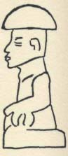
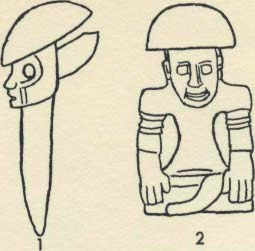
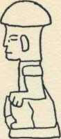
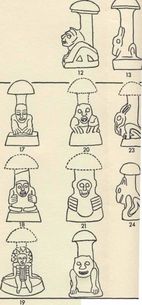
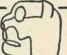
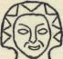
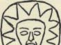
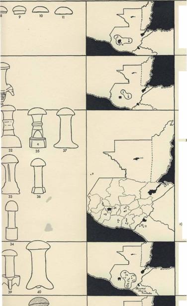

Abegg, C.J., 385 Abramson,
Angel, F., i86«. Angermayer,
A/tecs, the, 172, 217, 219, 225,
Harold Alexander,
Johann Albert,
227, 232, 234«., 236, 305, 307,
290 n.
359
312
Adam, 88, 364 Aegean, the,
Anne, Queen, 22 Annenkov,
317 Afghanistan, 230 Agaria,
N., 193 Anthimus, 145 M.,
Bachelier, Jean-Jacques, xx
366 Agrippina, Empress, xix,
Anthony, St., 85, 312 Antilles,
Bacon, Francis, 6, 93 Badham,
56-60,
167, 172 Antonio, Geronimo,
23 Badianus, 232 Baer, Bugs,
62, 63
269 Antwerp, 130, 199, 361
204 Baganda, 333 Bahamas,
Agustin, Manuel, 268-70, 272
Apicius, 340 Arabian Nights,
167 Ba'hr, Gerhard, 206 n.
Ahren, Frithiof, 137 Aix-en-
the, 109 Arabs, 109, 158, 319,
Bahrain Island, 335 Bale, 159,
Provence, 184 Akichi, Nicolas,
335-6 Aragon, 169
211, 212; PL xxxvn Balkan
27973. Aksakov, Sergej
Aragon, Father Alfonso, 250
Slavs, the, 336 Bangui, 383
Timofeevich,
Aranzadi, Telesforo de, 339
Banque Beige d'Afrique, 383
13, 394-9
Ararat, Mount, 42 Arawakan,
Bantu peoples, 331, 333
Alani, the, 42
167 Arcimboldo, Giuseppe,
Barcelona, 8, 343 ». Barctti,
Alaska, 139, 141-2, 171, 191
132-3,
Giuseppe, 21 n. Barla, Jean-
Albertus Magnus, 65, 169-70,
387; Pi. xxvin-xxix Ariege,
Baptiste, 145 Bamouw,
198, 200, 206, 210, 212-14,
176 Arras, IOIK., 199, 342
Adriaan J., 388 Barrios,
238, 353«-Aldobrandino da
Ashe, Gordon, 51 Ashkenazic
Ignacio, 279 n. Barrios,
Siena, 341,
culture, 366 Ashmarin, N. I.,
Miguel, 222 Bartlett, Vernon,
352; PL LVI Aleuts, the, 142
108 Ashmole, Bernard, 386
164 Basalenque, Diego, 230
Alexander the Great, 342
Ashmole, Elias, Fig. 2 Assi,
Basques, the, 10, 42, 77-8, 99,
Alexei, Tsar, 35, 53 Algonquin
the, 42 Athenasus,52,ii9-
103, 136-7, 149, 206, 339-41
Indians, 140 Allen, Hope
20,i34,i77».,
Basu, Arabinda, 384
Emily, 206, 210 Alps, the, 95,
337, 35i«-
Batrachitas, 158 Bauhin.Jean,
171, 346 Alsace, 197
Athos, Mount, 3380.
loott., 1507*., 358,
Altschul, Frank, Pi. xx
Attila, IO7H. Aude,
365, 371
Alvaro, 268
197, 211 Audubon,
Baumeister, A., 117/1. Bavaria,
Amann, Jules, 382, 400
357, 360 Augustine,
8i«. Bax, Dirk, 85, 86 Beals,
Amecameca, 305 America (=
St., 314 Austria, 200,
Ralph L., 267«., 276 Beam, 86
USA),4,6, 7, 9,13,
371 Avars, the, 41
Beatrice of Savoy, 341 Becker,
17, 22-3, 38, 40, 68, 1280.,
Aveyron, 211
Georges, IOOB., 381,
I59«., 203-4, 382
Avicenna, 127 Avilix,
400 Bedouin, the, 124,
Amsterdam, 356, 358, 359,
281
316, 335,
387; Rijksmuseum, 360; PL
Aymes, C. A. Wertheim, 386-7
336 Beers, Alma
LXXIII
Ayutla, 267 n. Azov, Sea of,
H., 385
Anderson, Arthur J. O., 222,
42, 366
225, 23IK. Andes, the,
168, 171 Andreev, M. S.,
121 n.
421
I N D E X O F P E R S O N S A N D P L A C E S
Begeyn, Abraham, 358-9; Pi.
Borhegyi, Stephan F., 78, 239, Brunson, Howard E., 307, 312
LXIX
273, 276-8, 281, 283«., 328, Brunswick, Globus, 275; Herzog
Begouen, Count, 176
329, 387; Fig. 18, 28
Anton Ulrich Museum, 358;
Belisarius, 338 Belyj, Andrej,
Borhegyi, Suzanne, 277, 280,
PL LXVI, LXVII Brussels,
214 Benavente, Toribio de, see
387
130, 361; Musees
Mo-
Borja, Carlos, 267, 3 87
Royaux des Beaux-Arts, 385;
tolinia Bering Strait, 140,
Bornholm, 44
Pi. xxiv, xxvi Buchner,
142, 143,
Borovikovskij, 14
Ernst, 386 Buchwald, N.
191
Borssom, Anthonie van, 358
Fabritius, n6n.
Berlin, 44, 123, 198 Bermeo
Bory, Michelle, PL XL
386
(Guipuzcoa), 206 Bern, 92 n.
Bosch, Hieronymus, 68, 83, 85-
Buddha, 321
Bern, Mr., 201, 212
90, 97, 187, 209, 318, 354-7, Buena Vista Loxicha, 308 n.
Bernadotte (Charles XVI, King
362, 386; PL xii, xin, xv-
Buffon, George, xx Buganda,
of Sweden), 339, 344
333
XVII, XXXVI
Bessarabia, 138 Bevan, Bernard,
Boston (Mass.), 255, 260-1, Buglawton (Cheshire), 204
23 8 Big Indian, 4 Birnbaum,
264; Museum of Fine Arts, Bugthorpe (Yorkshire), 204
E., 384 Biscay, 77, 151
PL v
Bugtussle (Alabama), 204
Bismarck, Otto von, 346
Bosworth, Joseph, 75 n.
Bulgaria, 42, 108, 372, 384
Bismarck Mountains, 215
Bouda, Karl 1380., 162*1.
Buller, A. H. R., 365«.
Black Sea, 41, 42, 43
Bouteneff, Ekaterina Apollina-
Bulliard, Jean-Baptiste (Pierre),
Blenheim, 39 Bles, Herri met
rievna, 213
150, 201-2, 213
de (Civetta),
Boyer, Madame, 52
Burns, Robert, 26
355-6, 362; PL r.xin, LXIV
Bozoum, 383
Burrhus, 50 Busbecq,
Bles, pseudo-Herri met de, 187;
Bozzini, 33
de, 41 Byzantium, 42
PL xxxm Bloch, Oscar,
Brabant, 131
127, 129, 145,
Bradley, Richard, I2O«.
Calan, Alberto, 279 n., 281
371
Bramah, Ernest, 49, 51
Galas, Mr. & Mrs. Nicolas, 88
Block, Edward A., 93 n.
Brandenburg, 123
California, University of, 233«.,
Blom, Frans, 2670. Boberg,
Bravlio, 27972., 281
384
Anna, 194 Boethius, Axel,
Brearley School, 384
Caligula, Emperor, 56
386 Bogert, Charles M., 385
Bremen (Alabama), 204
Calvados, 66 Cambridge
Bogoras, Waldemar, I39«., 194,
Bremontier, Nicolas Thomas,
University Press,
211, 318
151
337 Camotlan, see San
Bohemia, 16; 173, 177, 212
Brescia, 132; Pi. xxvni-xxix
Lucas Ca-
Boisacq, Emile, 10971., I22n.,
Breton, Adela, 323 Bretons,
motlan
163
the, 66, 74, 341 Breuil, Abbe,
Camp, Gaston van, 385
Bombieri, Carlo, 387 Bombon
176 Brillat-Savarin, Anthelme,
Canada, 128 n., 341, 382
(Seine-et-Marne), 102,
150,
Candelaria Loxicha, 308 «.
103
166, 172, 343 Brissac,
Cant, Ronald G., 386
Bonaparte, see Napoleon
Edouard de Cosse,
Caravaggio, Michel Angelo,
Bond, Raymond T., 384
385-6
355«-
Bongoland, 331-2, 333
Bristol, 386
Cardenas, Juan de, 23 3 Carelia,
Bonnefons, N. de, 6, 129, 130,
Britannicus, 56, 57, 62
337 Caribs, the, 167 n.,
131, 145
Brockelman, C., 155 Brown,
Carolinas, the, 38 Carpathians,
Boothroyd, Ronald H., 383
Captain Thomas, I02M.,
239 Carrasco, Pedro, 228 n.,
Bordeaux, xix, 102, 151, 384
Browning, Robert, 29
238^.,
Brueghel, Jan the Elder, 360-1
307 Carreras, Aurelio, 250-
Brueghel, Peter the Elder,
3, 255-
354, 355, 356, 362; PL LIX-
LXI
422
I N D E X O F P E R S O N S A N D P L A C E S
65,282(1., 292,294,299, 319,
Chimbus, the, 215
Cooper, Peter, 386
329; Pi. XLII
Chinantec country, 23 3/1., 23 8«.,
Copenhagen, n6«., 141, 384,
Carreras, Clara, 256, 260
266, 286 Chinese, the, 124-5,
386; Royal Library, 344-5
Carreras, Demetrio, 256, 257,
316, 317,
Cordoba, Juan de, 228, 282
259, 261-3 Carroll, Lewis (C.
320, 333-4
Cordus, Valerius, IOIM., 173-4,
L. Dodgson),
Chinon, 342
176, 199, 200, 206, 345, 370
67, 194-6 Caso, Alfonso, 307,
Chiquimula, 78
Corinth, 154 Cornishmen, 73-
324(2., 326,
Chloe, 348
4, 185 Corominas, Juan,
387; Fig. 24 Castelli, Enrico,
Cholula, 305
151,156,161,
355«. Castlemaine Harbor, 74
Chotin, 138
162, i69«., 37i«., 384
C; Jans, the, 8,10, 24, 78, 185-
Christensen, Bodil, 305, 306
Corot, 362 Cortez, 217
6, 335, 337, 339, 34O, 348,
Christensen, Clyde M., 385
Covarrubias, Caspar de, 220,
361, 365, 384 Catherine the
Chujupen, 279 «. Chukchees,
282W., 405
Great, 14 Catskill Mountains,
the, 1380., 139,143,
Covarrubias, Miguel, 266
4 Caucasus, 42, 137, 138, 384
191, 210, 211, 318
Covarrubias, Sebastian de, 151
Causa, Raffaello, 358(2.
Churchill, Winston, 164
Cowan, Florence, 245, 246, 250
Cavignac, 370 Cayetano, 287-
Chuvashi, the, 108 Cid,
Coxe, William, 35-6, 53
304, 310; Pi.
Cleofas, 250 Cid de Mendes,
Cracow, 200 n.
XLV; Fig. 21
Toribia, 264 Cigliana-Piazza,
Craig, A.J. M., 384
Cazan, 45 Celsus,
Giorgio, 385 Cimmerians, the,
Cratevas, 352
155
42 Cincinnati, 73 n.
Crecy, 39
Celts, the, 66, 95, 337, 343
Circassians, the, 137, 384
Creech, William, 26
Cerro Alux, Fig. 18 Chad,
Civetta, see Bles, Herri met de
Crimean peninsula, 41, 366
Lake, 331 Chadenet, Mr. &
Cizevsky, Dimitry, 346(1., 383
Cui, Cesar, 15
Mrs. Pierre,
Clare, John, 28-9 Claremont,
Cuicatecs, the, 266
387
348 Claudius, Emperor, xix,
Cumas, 117 n.
Chandler, David, 386 Chari
50, 55-
Cumbre, La, 246
district, 331 Charles VI,
63, 338
Curry, Walter Clyde, i87«.
Emperor, 53 Charles II, King,
Cleasby-Vigfusson, 209
Curtis, Rev. M.A., 38
22 Chase, Mary, 94, 203
Clement VII, Pope, 52-3
Cutler, Hugh C., 130-1, 385
Chatin, Adolphe, 171«., 182-3
Clotilde, Queen, 84 Clovis,
Czechs, the, n, 15, 38, 176-7,
Chaucer, Geoffrey, 26, 67, 160,
King, 84-5, 386; Pi. xiv
208, 336 Czik-Madefalva,
182, 18771.
Clusius, Carolus (Charles de Le-
Gy. Istvanffi
Chavaneau, Andre, 384
cluse),ioi,i03,i5O,i53n.,i6i,
de, 200
Chechens, the, 137
199, 200, 212, 239, 240, 342,
Cheremissians, the, 138
Dal', 155
345,358,364,367,369;^-27
Chiapas, 266, 275, 278-9, 284-6
Codina, Joaquim, 337 Coinci,
D'Albert, Peter, 384
Chiba, 330, 33i«. Chicago,
Gautier de, i6iM. Colcord,
Damascus, 109, 335
384; Art Institute,
Joanna Carver, 205 M. Collier,
Danes, the, 66, 67, 77, 343, 346,
361; Pi. LXXV Chichester,
J. Payne, 83 «. Collins,
384
133 «. Chichicastenango, 2790.,
Samuel, 3, 7, 35 Colombia,
Darwin, Charles, 24, 25
282 n. Chichimecas, 224, 225,
168 Conception, 250-2, 254
Darwin, Erasmus, I2on.
236-7, Chichiton, Juan, 226-7,
Conception Huista, 279(2.
Dauphine, 171, 183 Dauzat,
235 Chile, 10 Chiltepec, 23 3 n.
Constanti, 384 Cook, Arthur
Albert, 128, 129, 145,
Chimbu Valley, 216
Bernard, H5«.,
148, 371
117 Cooke, Mordecai
Dawson, R., 384 Delvau,
Cubitt, 23,
Alfred, 159, 160 Deonna,
195, 196
Waldemar, 1870., 386 Derleth,
August, 51
423
I N D E X O F P E R S O N S A N D P L A C E S
Desfontaines, L., 1350.,
Ekholm, Gordon F., 275-6, 324,
Filemon, 266
Desnoyers, Abbe, 102 Detroit,
387
Finan, John J., 13 3 «.
Wayne University,
Ekwall, Eilert, 204
Finns, the, 8, 138, 191, 337, 384
204
Elisha, 61
Flegenheimer, Arthur (Dutch
Devic, Marcel, 127
Elizabeth I, Queen, 45, 83, 169
Schultz), 204 Flemings, the,
Devonshire, 386 Dibble,
Elyot, Sir Thomas, 19,130, 134
86, 130-2, 150,
Charles E., 222, 23 in.
Emerton.J. A., 384 Emmart,
208,338, 36i,375 Florence,
Dickens, Charles, 82, 181
Emily Walcott, 232 n.
27, 233; Battistero,
Dickinson, Emily, 31 Dickson, Engadine, 98, 346 English,
187; Pi. xxxiv; Biblioteca
H. R. P., 335, 336 Dictionary
the, 7, 19-36, 38-40,
Laurenziana, 2330., 282; Fig.
of American English,
67-71, 80, 82, 97, 101, 106-7,
14, 20; Biblioteca Nazionale,
114
114,120«., 145,156,169, 205,
233«.; Fig. 15 Florence,
Dido, 342 Diego, Don
338, 339, 347-9 Ennius, 160
G. C., 204 Flores (Asores),
(Cacique of Etlan-
Entrc-deux-mers, 370
39 Flores, Francisco A.,
tongo), 220, 404 Dingwall,
Entwistle, Wm. J., 372«.
235 Florida, n«., 167,
Adam, 4 Dio Cassius, 56-7, Eparchides, 337». Epping
308 Formosa, 334 Ponies,
60, 62,
Forest, 33 Erasmus, 163
C. Torres, 169 «. Fort
338 Dioscorides, 21, IOIM., Ernout, A., IO9«., 136
Archambault, 383 Fort-
118,
Escorial, 233, 221-2, 404/1.
Camot, 126 Foulby, 384
151, 166, 199, 337-8, 351,
Eskimos, the, 141-4, 171, 319,
Fowkes, Robert A., 384
352, 366; Pi. xxn, xxxn, LVII,
330, 384
France, 4, 21, 66, 68, 80-1, 87,
LVIII; Fig. 26 Dniepr, River,
Estonia, 8
97, 102, 123, 127-30, 145-9,
42 Dobbie, Elliot V.K., 383
Etlantongo, 219, 220
152,156,159, 172-3,186,194,
Dodge, Carroll W., 385
Etruscans, the, 116, 117, 123,
208,318,341-3,349,364
Dodgson, C. L., see Carroll,
156, 386; PL xxi
Francis of Sales, St., 353
Lewis
Euripides, 52, 337«.
Francisco Claudio, 268
Dokkum, 95 Don, River,
Eustace, Robert, 49
Francois I, King, 172 Frank,
45, 366 Donner, Kai,
Evans, Charles, 125
A. B., 394 Frankfort (Main),
13872., 191 Dordogne, 370
Eve, 87«., 88, 374
78«., 199,
Douglas, Norman, 99, 153, 173
Evelyn, John, 21, 343
200, 201, 212 Frazer, Sir
Douglass, Beaman, 240-1
James, 122 French Canadians,
Doyle, A. Conan, 31-2
Fabing, Howard F., 73 «.
the, 341 Fresnes, 55 Freya, 202
Drachten, 383 Dumee, Paul,
Fabre, Jean-Henri, xix-xxi, 55,
Fribourg (Switzerland), 211
54, 55 Dumezil, Georges, 3 84
241, 338-9, 351; Pi i-iv, vi-
Fries, Elias, 367, 369 Frisians,
Duran, Diego, 218, 404
XI, XVIII, XIX, XXIII, XXX,
the, 66, 67, 98, 337, 338 Fuchs,
Diirer, Albrecht, 355«., 357
xxxi, xxxv, xxxvra, xxxix,
Leonhard, 133 Fulani, the,
Durham, University of, 384
332-3 Fusy, Antoine, 179 Fyt,
LXXVIII-LXXXII
Dutch, the, 66-7, 130-2, 208,
Fabre, Paul, xxi Faeroe Islands,
Jan, 130-2, 362; Pi. xxrv
211-12, 361
138 Falc'hun, Abbe, 383
Fauchet, Claude, 85«.
Gainsborough, Thomas, 23,
Eastman, Max, 384 Eckblad,
Faustino, Candido, 272, 273
362; Pi. V
F. E., 213 Eden, Garden of, 88, Faustino, Feliciano, 273
Galen, 20, 21, 118, 337-8, 35i«.
376 Eden, Richarde, 37
Fauvel, Camille, 52, 55, 139,
Gallee, J. H., 960. Garcia,
Egyptians, the, 115, 157-8, 202,
194, 381, 400 Ferrero,
Emilio, 288, 292, 296,
320 Eidenbenz, Emil, 193,
Guglielmo, 55 Fessel, Mr.,
297; Pi. xux
385
10 Festus, 96
424
I N D E X O F P E R S O N S A N D P L A C E S
Garcia, Pedro, 309, 312 Garcia,
75, 117, 146, 275, 338, 361,
Harington, Sir John, 169
Teodoro, 253 Garonne, 127
386, 388
Harssen, Meta, 385
Gascony, 86, 87, 151, 161, 339,
Gray, Thomas, 26 Greco, El,
Hart, Fanchon, 384
341, 370 Gaul, 96 Gay, Hazel, 304 Gredos, Sierra de, 8
Hartwich, C., 193
385 Geiger, Benno, 133 n.
Greeks, the, 105,118,121,123-4,
Harvard University, xix, 122,
Gelderland, 93 Genaro, 288,
135, 146, 152, 154, 156, 157,
I45M.,237,238«., 383,384
290, 297 Geneva, 164,193,265,
158, 162,316,317,337-8,364,
Hay, William Delisle, 23-24
346, 353,
375
Heem, Cornehs de, 134
386
Greenland, 141-3, 318
Heem, Jan Davidsz. de, 130,
Genin, Franfois, 178-9, 180
Gregory IX, Pope, 85, 88
131, 134; Pi. xxv Heim,
Genoa, 128 Geoponica, 124
Greiser, 164
Roger, xx, xxi, 52, 126,
Georgians, the, 137 Gerarde,
Gresham, Sir Thomas, 205
216, 237, 254, 28IW., 331,
John, 20, 21 Germans, the, 4,
Crete Herball, The, 19, 20
344, 367«., 381, 382, 400
66, 95, 135,
'Gribouille', 186 Gribovskij, 14
Helsinki, i6in., 337«., 384
173-4, 177, 345-6, 361, 365
Griboyedov, 14 Grimm, Jacob,
Henriquez Urefia, Pedro, 169/1.,
Gilbert!, Maturino, 229
148 n., 196 Gron, Fredrik, 192
I72M.
Gilliard, Thomas, 215, 216
Grzymala, Franciszek, I5«.
Henry VIII, King, 52
Girard (!'affaire), 54, 55, 349
Guadalupe, 287-304, 310
Henry, Victor, 74W., 96/2.
Giron, Epilonio, 279 n., 280
Guadalupe, Virgin of, 314, 315
Hera, 117
Gironde, 370 Gitlow, Abraham
Guatemala, 78, 104, i6iM., 248,
Herault, 66
L., 215, 218,
275-85, 329, 371, 387; Ff£. 17
Herberstein, Sigismund von, 45
276
Guatemala City, 276, 277, 280,
Herculaneum, 87, 361-2, 386;
Gleditsch, J. G., 123, 124,177-8
281, 284; Museo Nacional,
Pi. LXXVI
Glen, G., 240 Gobi Desert, 299
276, 279; Fig. 18, 19
Herman, Alexander C., 387
Godefroy, Frederic, 128
Gubernatis, Angelo de, 121
Hernandez, Francisco, 221-2,
Godstow, 195
Guernica, 340 Guipuzcoa, 10,
228, 232, 233, 309, 315, 321,
Goethe, Johann Wolfgang, 202
77, 206 Guitry, Sacha, 342
405 Hernandez, Pedro
Goetz, Delia, 281, 282 Gogol,
Gusha, Ishiwara, see, Masujima,
Raimundo,
16
Katashi
279 n. Hernandez, Victor,
Goldsmith, Oliver, 113
Giissow, H. T., 52
245, 246,
Goldstein, Martin (Buggsy),
Gypsies, 104)1., 137
247, 249, 251, 253, 255,258n.,
204
261
Gombe, 332 Gombe, Jalo, 332,
Hadding the Dane, 343
Herodotus, 42, 43 Hervey,
383 Gomez, Trinidad, 279 n.
Hagberg, Knut, 344 Hagen,
Lady, 347 Higuera, Salvador
Gonzalez, F. Ruben, 279/1.
Mount, 215 Hainaut, R., 383
Mateos, 220 Hildebrandsson,
Goodhart, Mrs. Arthur L., 384
Hakluyt, Richard, 4on., 4$n.,
H., 192-3 Hildegard, St., 353n.
Gordan, JohnD., 384
217
Hippocrates, 337«. Hiqit, 157
Goteborg University, 386
Hall, Elizabeth C., 385
Hiscock, W. G., 196n.,
Goths, the, 41, 42 Gow, A. S.
Halotus, 57, 59 Hamilton,
Hispaniola, 167 Hitchcock,
F., 337 Grahame, Kenneth, 67
Frans, 359, 386; Pi.
Charles, 387 Hitler, Adolf, 42
Grandville, J.-J., 362-3; Pi.
LXX
Hoffherr, Frederic G., 385
LXXVH
Hamilton, James, 359«., 386
Hoffmann-Krayer, E., 38«.,
Graves, Robert, xix, 10, 33, 61,
Hammerich, L.L., 141-3,171«.,
2IOW.
384 Hansen, Sigurd,
Holberg, Ludvig, 210 Holland,
n6n.
Philemon, 155, 340
Hollywood, 157 Holmes,
Urban T., i6in.,
425
I N D E X O F P E R S O N S A N D P L A C E S
Holstein, 44, 77 n. Holtved,
James, Richard, 34-5; Fig. i
Katori, 330
Erik, 143 Homer, in, 337
Janacek, Leos, 15
Kawabata, Toyohiho, 33in.
Hondecoeter, Melchior de, 3 59- Japan, 6n., 125, 265, 330-1
Kayaloff, Elisabeth, 384
60; Pi. LXXIII, LXXIV
Jarecki, Casimir, 17872.
Kazenchak, Nicholas, 384
Hoogshagen, Searle, 272
Jennings, Jesse D., 328 n.
Keats, John, 29, 302
Hortus Sanitatis, 170, 351, 352;
Jeremiah, 348
Kelleher, Mr. & Mrs. Hugh,
Fig. 7, 10
Jespersen, Kai, 384
386
Hotherus, King, 90 Houghton, Jcssen, Carl, 198
Kelly, John W., 142 Kers,
Wm., 365 n. Housman, A. E.,
Jesup North Pacific expedition,
John, 69 Khazar Empire, 42
376 Huautla de Jimenez
138"., 194 Jesus Christ, 16-
Khlebnikov, Viktor Vladimi-
(Oaxaca),
17, 242, 243,
rovich, 13
237, 242, 245-65, 268, 269,
244, 245, 291, 297, 310, 311,
Kidder, Alfred V., 284)7., 328
276, 280, 282, 284«., 287-304;
319, 322, 352 Jews, the, 135, Kiev, 43
PL XLII, XLV-L
138, 202, 345,
Kingsley, Charles, 196
Hudson, W. H., 25 Hughes,
347, 366
Kingston (on Thames), 348
John P., 384 Hungary, 41, 42,
Jobson, Rev. O. D., 383
Kingston, Neville, 65 n.
ioin., 153«.,
Jochelson, Waldemar, 138,140- Kipling, Rudyard, 94 Kloeke,
157, 199, 239, 321, 367, 384
i, 191, 194, 210, 2iiH., 318
G. G., 93 >z., 383 KnuttelJ. A.
Hung-shou, Chen, PL LII
Jocotan, 78, 104, 371 John,
N., 897*. Korea, 203, 330
Huns, the, 40, 41 Hu Shih,
King, 69-70
Korjaks, the, 139, 140-1, 190-1,
Dr., 320 Huxley, Aldous, 103,
Johnson,JeanBassett,23 7,2387?.,
194, 195-6, 210, 2I4M., 318
224
248-9, 257 Johnson, Mr.
Korsakov, General, 193
(of Wetherby),
Korzhenevskij, N. L., I2in.
Ignacio, Miguel, 2790.
102 n.
Kott, Jan, I5«. Kraemer,
Imba, 330
Jonghe, Ed. de, 227
Erich von, i6i«. Krebel,
India, 41, 86, 104, 121, I29«., Jordanis 107 «. Jos, 332
Rudolph, 193 Krieger, Louis
173, 3i6
Joseph, St., 314 Josif
C. C., 241 n. Krupskaja,
Indo-European peoples, 5, 42, Volokolamskij Monastery,
Nadezhda, 13 Kubor
44, 78, 99, 109, 124, 144, 191,
188
Mountains, 215 Kuskokwim,
319,330,374 Ingrandes
Juchitan, 267
141, 142 Kutriguri, the, 42
(Berry), 87
Kwangsi, 125 Kyoto, 330
n. Ingush tribe,
Junius, Hadrianus, 89«., 1327?.
138 Irish, the, 66, 74, 95 Isaac Junker, Heinrich F. J., 121 n.
Judasus, 341 Isidore of
Junquera, Manuel Lorente, 3 86
Labourd, 10, 136 Lacaud,
Seville, St., 134,
Jupiter, 317 Jura mountains,
Louise, 238 La Farge, Oliver,
i69«., 35i«-, 353»-Italy 4,
401-3 Justinian, 158 Juvenal,
267«. Lafon, Rene, xix, 149,
6«., 7, 10, 133, 168,
119
388 Laguna, 267 Lajpop,
171-2,183,194, 340, 364, 385,
Aparecio, 279 n. Lajpop,
386
Kakchiquels, the, 279; Annals
Santiago, 279 n. Lamb, Patrick,
Ixion, 116-7;
22 Landes, the, 151, 370 Lao-
PL xxi
of the, 281, 282-3 Kalidasa,
Ixtepec, 267, 276
121 Kamchadals, 191
Tse, 320 Lapps, the, 196, 344
Ixtiapok, 279
Lascoff, Frederick D., 384
n.
Kamchatka, 139, 190, 194, 195,
241
Lausanne, 382 Lawrence, D.
Jacomet, Daniel, xxi Jakobson,
Kaminaljuyu, 284, 328; Fig. 19
H., 349-50
Roman, xix, 94,172,
Kampala, 333, 383 Karlsruhe,
i88«., 2310., 349, 388
96 n.
James II, King, 22 James
Karpovich, Mrs. Michael, 383
VI, King, 68 James,
Kashmir, 120, 121, 316
Edward, 13 3 n.
426
I N D E X O F P E R S O N S A N D P L A C E S
Leber C., 85 ».
Low Countries, 130-2, 134
Mason, J. Alden, 286 n.
Lecluse, Charles de, see Clusius,
Ltibeck, 345
Masujima, Katashi, 125
Carolus
Luciano, Felipe, 268-9
Mata Hari, 55
Leeuwarden, 383 Legorreta,
Luciano, Gennaro, 386
Match, 121
Agustin, 3 87 Lehovich,
Lucilius, 58-9
Matias, Aristeo, 295, 308-16,
Evgenia, 388 Leiden, 200, 240,
Luganda, 333
321, 329; Pi. LI; Fig. 22
383 Leipzig, 78«., 193 Lena,
Lugt, Frits, 360/2.
Matias, Serafin, 309, 310, 312
River, 191 Lenin, 13 Leonard,
Lundbergh, Holger, 194
Matlatzinca, 220, 230, 307
Carmen Cook de,
Luzon, 124
Mattioli, Pietro Andrea, 352;
304-5, 306
Lyall, Robert, 36
Fig. 26
Leonard, Donald, 306
Lyons, 21, 208, 341, 352
Matto Grosso, 167 Maublanc,
Leonardo da Vinci, 357
A., 382 Maya, 266, 273, 275,
Leont'ev, Konstantin, 346«.
Mackintosh, H. S., 209 277-8,
Leuba, F., 398/1., 400-3 Lewis,
Madagascar, 126, 330-1 280-1, 284, 286, 322, 328, 329
Wilmarth, 347 Liddell & Scott's
Madrid, 8, 221, 343/1.; Prado
Mayno, Juan Bautista, 354-5,
Greek lexicon,
Museum, 87, 354~5, 361, 386;
386; Pi. LXI, LXII Mazahua,
135
Pi. xin, xv-xvii, xxxvi, LXI,
220-1, 307 Mazatecs, the,
Lincolnshire, 128 n. Linder,
LXII
242-5, 246-51,
David, 237 Lindisfarne, 164
Magdalena Loxicha, 308/1.
264, 266, 268-9, 283, 284-304,
Linnseus, Carolus, 201, 212,
Maglemose, 116 Magnus,
305,308,310-2,314,315,324,
213, 344, 357, 364-7, 369, 371
Olaus, 90; Fig. 4, 5
329
Linne, S., 238/7.
Maimonides, 153/1. Mainz, 170, Mazatlan de losMijes, 248, 264-
Lippi, Lorenzo, 178-9, 385
351 Maiuri, Amedeo, 386
5, 267-73, 284/1.
Lisbon, 384
Majakovskij, Vladimir, 349
McCurrach, David, 386
Lithuanians, the, 4, 45, 135, 336
Majolier, Mrs. Michael, 386
Mclntosh, John, 387
Littre, Maximilian, 120, 127
Majorca, 361 Majorenhof, 3
Megenberg, Konrad von, 198-
Livonians, the, 45
Malencon, M. G., 342
9, 200, 212, 371, 385
Locusta, xix, 57-63
Malkiel, Yakov, 169/1., 384
Meillet, A., 109/1., 136
Loire, 80, 87, 211
Malvesin-Fabre, Georges, 384
Mej, Lev Alexandrovich, 12
Loki, 202
Mandach, H. de, 385 Manuel,
Melanesians, the, 215
Lombardy, 128
Don Juan, 104 Maori, the, 24,
Melun, 102
London, 90, 382-3, 386; British 125-6, 330 Marban, Esteban,
Menage, Gilles, 127
Museum, 117, 386; Pi. xxi; 219 Mardersteig, Hans, 275,
Mendoza, Jose Miguel, 124
Gentleman's Magazine, 241;
383 Maria Theresa, Empress,
Meng, Chili, 387
Illustrated London News, 87/1.;
53 Marks, A. F., 28/2. Marques, Merigny, 87/1.
Medical & Physical Journal, Luiz, 384 Marquiiia, Ignacio,
Mesrnin, Marie, 102, 103
240; National Gallery, 355«., 387 Marseilles, 151 Marsh,
Mesquida, Antonio, 361
360; Pi LXXIV; Science Mu-
Gordon H., 384 Martinet,
Messalina, 56, 62
seum, South Kensington, 386; Andre, 76, 388 Martinez,
Metzler, Rev. Paul F., 383
The Times, 33, 650., 76, 103, Julia, 246 Martinez Cid,
Mexico, 101, 131-2, 216-74,
164; Times Literary Supple-
Herlinda, 246,
276, 278/1., 283, 284, 286,
ment, 209; University, 331;
247, 250, 251, 253, 255, 264
287-319, 322-9
Wallace Collection, Pi. xxv
Martinez de la Cruz, 232/1.
Mexico City, 220, 222, 230,
Lot, Ferdinand, 1070.
Martorell, Felix, 384 Mary II,
231«., 233,245,262, 267, 287,
Lotz, John, 384
Queen, 22 Mary, Virgin, 311,
305, 306, 307, 387; Banco
Louis XVI, King, 39«.
314, 354
Nacional de Mexico, 267,
Lourdin, Maurice, 102
276,387; General Motors Ac-
ceptance Corporation, 387;
Museo Nacional, 220, 229,
233/1.
427
I N D E X O F P E R S O N S A N D P L A C E S
Meyer-Liibke, W., 162 n.
Miiller, Gerhard Friedrich, 53
Corporation, 387; New York
Meyrink, Gustav, 52
Miiller, Hans, 385
Times, 239 n.; Pierpont Mor-
Michoacan, 230
Mundo, Pedro (Pe:t Mu:nt),
gan Library, The, 118, 166,
Mickiewicz, Adam, 15
273 Munich, Bavarian State
351-2, 385; Pi. xxn, xxxii,
Mictlantecuhtli, 234«., 235, 283
Gallery,
Lvi, LVIII; Public Library, xix,
Migne, J. P., I34«., 353«.
386; Pi. xii, LXX Miinz,
385, 404«.; Reliable Mush-
Mignon, Abraham, 359, 3600.
Ludwig, 386 Muralt,
room Company, 10.
Mije country (Mijeria), 229, Leonhard von, 385 Murison,
New Zealand, 24, 125-6, 316
238n., 265, 266, 267-9, 27J,
David, 386 Murray, Margaret
Nice, 145
284-6, 299, 305, 308, 311,
Alice, 68«.,
Nicholas II, Tsar, 349
315,329 Milan, 128, 132;
70, 82, 83, 90, 385
Nicholas, Thomas, 168
Banca Com-
Muschampe, 14
Nigeria, 332, 383
merciale Italiana, 387 Miller, Mycena;, 154
Nikander of Colophon, 73 n.,
Walter S., 229, 266,
151, 337, 35i»-Nilles,
267, 268, 269, 272, 273
Nagera Yanguas, Diego de,
Father John, 216 Nixon, Vice
Milne, A. A., 203 Milton,
220
President, 203 Noguera,
John, 26 Mingende, 216
Nahua, the, 219, 220, 223-6, Eduardo, 324; Fig. 23
Mingrelians, the, 137 Mistral,
228-35, 319
Nordhagen, Rolf, I92«., 193,
Frederic, 372 Mithridates
Namuth, Hans, 277; Pi. XLIV
213, 384
Eupator, 352 Mithridates the
Napier, Barbara, 66
Normandy, 66, 89 North
Great, 366 Mitla, 282 n. Mixco,
Naples, 149; Banco di Napoli, Berwick, 68 Northcote,
Fig. 18
358, 386; Pi. LXVIII; Museo William, 71-2 North Sea xvii,
Mixtec country, i66«., 219,228
Nazionale, 354, 361, 386; Pi. 22, 66, 77, 78,
Moliere, 178-9, 181, 183, 184
LIX, LX, LXXVI
95, 142, 331, 333, 337, 347,
Molina, Alonso de, 228,232,23 5
Napoleon, 81, 102, 339; Pi. xx
374 Norwegians, the, 7, 66,
Momostenango, 2797;., 280
Naryshkina, Natalija, 53
67, 191,
Monachino, Joseph, 312
Natirbov, Fat'nia Hanoum, 384
208, 335, 339, 384
Mongolia, 334 Montaigne,
Navarre, 10, 145, 149
Nsimbi, M. B., 333, 383
Michel de, 342 Montbeliard,
Nebaj, 279
Nunivak, 142 Nuttall,
371 Montesquieu- Avantes,
Negrete, Ladislao Lopez, 387
Zelia, 23 3 n.
176;
Negritos, the, 215
Fig. ii
Nelson Island, 141
Oaxaca, 217, 219, 228, 233n.,
Montezuma, King, 217-8, 236
Nemcova, Mrs. Bozena, 16
237,238n.,248, 266,267,276,
Moravia, 177 Mordvines, the,
Nero, Emperor, 50, 56, 59, 60,
285, 287, 307, 308, 314, 322;
138, 139 Moreno, Wigberto
62, 338
Fig. 16
Jimenez,
Neuchatel, 193, 400
Ob, River, 138, 191
220, 23in., 235, 387
Newark-on-Trent, 70
Oberon, 84, 148
Morgenstierne, Georg, 120,121,
Newcastle, Duke of, 347-8
Occa, the, 45
I92W., 383
New Guinea, 215-6, 241, 276, Ocosingo, 275; Fig. 19
Morley, SylvanusGriswold,28i
320
Ocrisia, 122
Morner, Carl Th., 193
New York, 10, 11, 83, 261, O'Dea, W. T., 386
Moscow, 4, 41, 138, 172, 349;
264-6, 274, 292, 303-4, 383-4, Odell, W. S., 52
Imperial Society, 394
387; American Geographical Odman, Samuel, 192, 193, 196
Motolinia (Toribio de Bena-
Society, 387; American Mu-
O'Donnell, John, 208
vente), 218-9,225-6, 228, 230,
seum of Natural History, 275, Ohio State Penitentiary, 73 n.
257, 404
385, 387; Botanical Garden, Okinawa, 314
Moussy, Marcel, 342
216,312, 385; Columbia Uni-
Olmos, Andres de, 227
Moynier, MM., 183-4
versity, 383-5; Frick Library, Olsen, Magnus, 192
385; Metropolitan Museum, Omachi, Mrs. Chiyo, 331«.
Pi. LXV; National Container
Onoguri, the, 42
428
I N D E X O F P E R S O N S A N D P L A C E S
Orinoco, 323 n.
Paul, St., 263, 297
Poe, Edgar Allan, 299
Ortega, Francisco (Cliico), 266, Paulet, Jean-Jacques, 53, I50«.,
Point Agarum, 366
267, 307-8, 310, 313
365 "
Poitou, 341
Oslo, 120, 213, 383, 384
Pausanias, 154, 160 Pavlov
Pokorny, Julius, 92, 93 Poles,
Ossetians, the, 108, 137
reflex, 209, 347 Pavoluccio
the, 10,15, 138, 212, 336,
Ostjaks, the, 138, 140
Napolitano, see Por-
345
Ostrogoths, the, 41
pora, Paolo
Policarpo, Francisco, 268
Otomi, the, 220, 224, 228, 322
Paz, Antonio Ramirez, 279 n.
Polotsk, 366
Otrebski, Jan, now.
Pease, Arthur Stanley, 122, 123
Polovtsi, the, 41
Ovid, 122, 154
Pechenegs, the, 41 Pedersen,
Pomerania, 44
Oxford, 88, 194, 384; Ash-
Holger, 105, 109-11 Pedro
Pomrnersfelden, Schloss, 130
molean Museum, Pi. LXXI; Chapa, San, 315 Pelion,
Ponce de Leon, Pedro, 166,
Bodleian Library, 35; Fig. i; Mount, 116 Penafiel, Antonio,
183, 227
Oxford Dictionary, 21 n., 65, 323; Pi. LIU Perm, William,
Popocatepetl, 305
68, 76, 81, 97, 100, 106, 113, 26, 180 Pennsylvania Dutch,
Popol Vuh, 281, 283
182, 183, 203, 205-6, 208
66, 101 Perigord, 172, 183,
Porpora, Paolo (Pavoluccio
342 Perniconi, Vincenzo, 385
Napolitano), 358, 361; PL
Paccius Antiochus, 62
Perrault, Charles, 82 Perseus,
LXVIII
Palay, Simin, 86
154 Persia, 121, 316 Peru, 168
Porta, Giambattista della, 179
Paleo-Siberian tribes, 138, 191, Peten, 278, 279, 284 Peter, St., Portuguese, the, 335, 340
3i8, 319
16-17, 263, 297 Peter the
Pothey, Alexander, 159, 160
Pamir Mountains, 121, 316
Great, Tsar, 53 Petersen, John,
Potocki, Waclaw, 15, 240
Panjojehan, Diego, 279«.
143 Peterson, Roger Tory, 382,
Powick (Worcs.), 2410.
Panofsky, Erwin, 385
386 Petrarch, 41
Prague, 38
Papua, Gulf of, 215
Petronius Arbiter, 1290.
Precop, 45
Papuans, the, 215
Philippines, the, 124 Picard,
Prescott, William H., 236, 276
Paris, xx, 6, 139, 151, 172, 183, Charles, 386 Picardy, 132
Pretot, Suzanne, 385
208, 216, 343, 365, 385-6; Piedmont, 128 Pike, Eunice
Princeton University, Art Mu-
Bibliotheque Nationale, 227, Victoria, 242-5,
seum, 356«.; Institute for
25J> 351'. Pi- LVn; College de
246, 250, 251, 308, 309
Advanced Study, 385
France, 384; Institut de Fran-
Pinney, Alexander, 384
Prior, Richard C. A., 94«., 101
ce, Academie des Sciences, Plaincourault, Chateau de, 87 n.
Promathion, 122
254; Louvre, 130; Museum Platanillo, 267, 271 Platina, see
Provence, xix, xx, 55, 183, 241,
National d'HistoireNaturelle, Sacchi, Bartolomeo
337, 338-9, 348, 365, 372
xx, xxi, 213, 381; Societe
de'
Providence, R. I., John Carter
Mycologique de France, 87 n.
Plato, 294 Plautus, 179-80
Brown Library, 230
Parker, J. H., 88
Pliny (the Elder), 106, 118,
Prynne, William, 70 n.,
Parkes, William, 32
ii9, 134-5, I5S-6, 158, 160,
Pskov, 345 Puck, 94, 203
Parkinson, John, 6, 156, 177,
i?i, 338, 340, 35i«., 353,
Puebla, 245, 250 Pugh,
178, 239, 347
361
Nansi, 384 Pulaski, Irene,
Parmentier, Antoine-Augustin,
Plot, Robert, I2on. Plutarch,
384 Pushkino, 349
173
118, 120-2, 316, 317 Pochutla,
Pyrenees, 38n., 42, 137
Parrish, Anne, 51
2380. Podensac, 370
Partridge, Eric, 80
Qatar peninsula, 335 Quer, P.
Pascal, Carlo, 386
Font, 337 Quetzalcoatl, 281
Paso y Troncoso, 233*1., 282 n.
Quetzaltenango, 279, 282 n.;
'Pasquin, Anthony', see Wil-
Fig. 19
liams, John
Pastor, Ludwig, 53«.
Patricius, Petrus, 60, 338
429
I N D E X O F P E R S O N S A N D P L A C E S
Quiche country, i6i«., 275,
Rogers, Donald P., 385
Sainte-Marthe, Scevole de, 85 n.
279, 280 Quirino, Tinioteo,
Rojas, Agustfn de, 343 n.
Salaman, RedclifFe N., i69«.
268, 270-2
Rolfe, R. T. & F. W., 87n., Salcaja, 279; Fig. 19
382
Salino, Mr. & Mrs. Charles, 387
Rabelais, Francois, 157, 164-5,
Rolland, Eugene, 66«., 86, 197,
Salisbury, William, 240
208, 342
211
Salmon, William, 118
Ramain, Paul, 3 81-2
Remains, Jules, 342
Salvador, 275, 284
Rambouillet, 54 Ramirez,
Rome, 22, 27, 41, 43, 59, 62, Samarkand, 120
Salvador, 279 n. Ramsbottom,
76, 121-2, 123, 149, 154, 160, Samoyeds, the, 191, 196
John, 3 3,52,65 w.,
169, 170, 179, 180, 316, 338, Samson, 207
87«., 123, 124, 212, 382
340, 341, 356, 365; Galleria San Agustin Loxicha, 308-12;
Rautavaara, Toivo, 337«.
d'Arte Moderna, Pi LXIX;
Pi. LI; Fig. 22 San Andres,
Raverat, Mrs. Gwen, 25
University 385; Vatican, 23 in.
249, 251, 255,
Ravila, Paavo, 384 Raymond,
Romig, Rev. Edgar F., 383
258?;.
Bugs, 204 Rebelhau, Alfred,
Romulus, 122
San Andres Xecul, 279 n. San
179 Rebikov, 15 Recinos,
Rosal, Don Francisco Martinez Angel, 287, 304 San Antonio,
Adridn, 282 Redskins (of
del, 279 ».
245 San Baltasar Loxicha, 308
America), 24 Reims, 84, 85,
Rosas, Marina, 305, 306
n. San Bartolo Loxicha,
386; Pi. xiv Reko, Bias
Rossi, Enzo, 386
2380.,
Pablo, 237, 238«.,
Rouen, 3 52
3o8«.
241, 242, 243
Rouille, K. F., 394
San Bernardino, 246, 264
Reko, Victor A., 237, 2380.
Roussillon, 337
Sanchez, Severiano, 272, 273
Remi, St., 84, 85; Pi. xiv
Rumania, 212, 336, 384
Sanchez Canton, F. J., 354, 386
Rernus, 122 Rennes, 383
Russians, the, xvii, 3-18, 26, 34,
Sandison, R. A., 241 w.
Reyes, Ismael Jimenez, 308-10,
35, 36, 37, 39, 43, 44, 45, Sandoval, Lisandro, 37in.
312, 321
95, 103, 148, 153, 154, 193, San Francisco Loxicha, 308 n.
Rhazes, 21
208-9, 231, 321, 33<5, 337, 345, San Juan Ixcoy, 279 San Juan
Rhone valley, 151, 337
348, 366, 385
Mazatlan, see Mazat-
Riazan, 213 Richardson,
Ruysch, Rachel, 359, 362;
lan de los Mijes San Juan
Allan B., 266-8,
Pi. LXXI
Sacatepequez, 279«.,
274, 287, 289, 290, 292, 293,
281
296, 299-301, 304; PL XLII, Sabina, Maria (the Senora), San Lucas, 253 San Lucas
XLVI-L
288-304, 314, 319, 329; Pi
Camotlan, 229, 268,
Richardson, Mary, 292
XLVI-XLVIII, L
273-4 San Martin
Riga, 3
Sabina, Polonia, 288-303; Pi.
Jilotepeque, 279 n.,
Ripley, George, 71; Fig. 2
XLVI-XLVIII Sacclii,
281
Riviere, Dr. Dujarric de la,
Bartolomeo de' (Plati-
San Miguel Acatan, 279 n.
47, 52 Robbins, Mr. & Mrs.
na), 170, 341 Safford, W. E.,
San Pablo Mitla, 315 San Pedro
Warren
236-8, 276, 307,
Jocopilas, 27972., 280 San
Delano, 386 Roberto, Don,
323«-
Pedro Nexapa, 305 San Pedro
see "Weitlaner,
Sahagiin, Bernardino de, 222-
Tlanixco, 306-7 Santa
Robert J. Robin Goodfellow,
6, 228, 230, 232-5, 236-7,
Catarina Loxicha, 308n. Santa
83, 84,160,
238«., 282, 283, 289, 404».,
Fe (New Mexico), 222,
176; Fig. 3 Robles,
405-7;
231 w. Santa Margarita
Fig. 14, 20 St. Albans,
Vitaliano, collection,
69, 70 St. Andre de Cubzac,
Huitepec, 273,
Fig. 19
370 St. Andrews (Fife), 386 St.
274
Roch, M., 193 Rodocanachi,
Louis, Missouri Botamical
Santa Maria de Ixcatlan, 248
Emmanuel, 52
Garden, 131, 385 St.
Santa Maria Nativitas Coatlan,
Petersburg, 4, 14, 193
272-4 Santa Marta Loxicha,
308 n.
430
INDEX OF PERSONS AND PLACES
Santiago de Atitlan, 279 n.
Shakespere, William, 26, 67, Sterbeeck, Franciscus van, 100
Santiago, Ebn'gida, 310
91, 94, I29«., 148, 159, 162,
n., 131-2, 150/1., 171, 341-2;
Santiago Yaveo, 2380. Santo
168, 169, 180, 181, 187, 203,
PL xxvii Sterne, Laurence,
Domingo Petapa, 267 Saone,
207, 343 n.
27, 28, 163,
Haute, 87, 211 Sapper, Carl,
Shakhmatov, A. A., 2310.
181
275-278 Sarasota (Florida),
Sharon, Herman, 385
Stettin, 44
Pvingling
Shawe, Dr., 348
Stevens, Neil E., 38/1.
Museum, 13 3 n. Sarauw, G.
Shelley, Percy Bysshe, 30
Stockholm, 190 Strahlenberg,
F. L., n6«. Sarmatians, the, 42 Sherriff, R. C., 50, 51
Philip Johan von
Saville, Marshall H., 238«.
Shook, Edwin M., 284«., 328M.
139, 190-4, 196 Strasbourg,
Saxo Grammaticus, 343, 344,
Siberia, 138, 139, 140, 143, 171,
163 Strohschneider, H., ioi«.
384
191,215, 319,320,330
Stuttgart, 237, 23 8 n. Sudan,
Sayers, Dorothy L., 49
Siegel, Bugsy, 204
139, 159, 331 Suetonius, 56,
Scandinavians, the, 42
Sierra Mazateca, 288
57, 59-61, 338 Suida, William
Schapiro, Meyer, 186-7, 3^5
Silanus, Marcus Junius, 57, 62
E., 387 Summer Institute of
SchiafEni, Alfredo, 385
Simpson, C. G., 384
Linguistics,
Schiermonnikoog, 95
Sind, the, 173
the, 266, 387 Sung
Schlittler, J., 346, 385
Singer, Rolf, nn.
mountains, 334
Scholfield, A. F., 337
Sisay, Juan, 279/1.
Surselva, 98, 101, 346
Schonack, William, 62 n.
Skendi, Stavro, 383
Sussex, 91
Schooneveld, Elizabeth van,
Slavs, the, xvii, 4, 5, II, 23, 39, Svanetians, the, 137 Swedes,
345
4i, 43, 44, 78, 135, 187, 231, the, 7, 45, 137, 192-4,
Schrieck, Otto Marseus van,
336, 344, 347, 394
201,337,339,343-4,346,367
211-2, 356-60, 361; Pi.
Slovaks, the, 78-9, 336, 384
Swineshead (monastery), 70, 71
Switzerland, German, 346, 373;
XXXVII, LXV-LXVII
Smith, Alexander H., 19«.
Schiibeler, Fredrik Christian,
Smith, Logan Pearsall, 162
French, 346
192, 193 Schultes, Richard
Smith, W. F., 164-5
Syrenius, 200 n.
Evans, 237,
Smolandia (Sweden), 201, 212
238/1., 241, 242 Schulthess,
Smollett, Tobias, 27, 208
Tabasco, 278 Tabor
Felix, 385 Schweinfurth,
Snyders, Frans, 130, 131
(Bohemia), 177 Tacitus, 43,
Georg, 331-2 Scotland, 68-9,
Solola, 279
47, 56-60 Tadzhiks, the, 121,
n.
128«., 3590. Scott, Charles P.
Soochow, 125
318 Taino Indians, 167, 168
G.,
Talleyrand, 81;
82n. Scott, R. T. M., 51
Souckova, Milada, 384
Pi. xx Tamm,
Scott, Sir Michael, 19-20
Soule, the, 149
Franz Werner, 359,
Scribonius Largus, 62
Sousa, 330
362; Pi. LXXII Tanala, 126,
Scythians, the, 42 Sebillot, Paul, Spaniards, the, 8, 78,104/1., 151, 330 Tanaquil, 122 T'ao Ku,
68 n. Sefton, Earl of, 39 «.
156, 167-71, 172, 173, 183, 320 Tarascans, the, 229-30,
Seguy, Jean, 151
322 Tarquin the Elder, King,
n., 161
185,216-7,220,231,290,335,
Selborne, 22 Seler, Eduard, 323
122 Tarragona, 3 84 Tartars,
339, 340
the, 40, 41, 45 Tartuffe, 178,
n., 324, 326-
Spencer, A. M., 242/1.
181, 183-4, 354,
9; Fig. 25
Spenser, Edmund, 29, 30, 67
Seneca, 56, 58, 59, 61-3
Sprengel, Kurt, 369
384-45
Serbia, 103
Stalingrad, 42 Stamford
Tatiana (Romanov), 349
Serignan, xix-xxi, 55, 339, 384
(Conn.),
Tatra, 78
Pi. xx Stanley, Mr.,
Serna, Jacinto de la, 226-7, 232,
348 Starck, Taylor, 383
Taylor, Jeremy, 21, 22, 353
235, 252, 257, 306, 315, 407
Starkie, Walter, 137 Steele, A.
Teale, Edwin Way, 388
Servius Tullius, 122
B., 98/1. Stephen, King, 40
Steppes, the, 41, 42, 43
431
I N D E X O F P E R S O N S A N D P L A C E S
Tehuacan, 245
Tolstoy, Alexej Konstantino-
Wahgi River, 215, 216
Tehuantepec, Isthmus of, 219,
vich, 28
Wakefield, 384
228, 2380., 266, 276
Tolstoy, Leo, 12, 391-3
Walde (dictionary), no
Temazcaltepec, 220 Tenango
Toluca, Valley of, 306, 307
Walden, 25, 26
del Valle, 226, 306 Tennyson,
Tompson, Agnis, 69 Trafalgar,
Wales, University College of,
Alfred, 29 Teocalcingo, 23 8 n.
39
384
Teochichimecas, 224, 225
Trembecki, Stanislaw, 15
Walpole, Horace, 347-8
Teopancalco (Teopancaxco),
Tremblay, John P., 387
Wartburg, Walther von, 73 «.,
323-5, 327-9; PI. Lin; Fig. 23
Trinidad, Jose, 274 Tucker,
I52«.
Teotihuacan III period, 323-4,
Archie N., 331-2, 383 Turks,
Washington (D. C.), Botanical
328-9; Pi. LIII
the, 41, 42 Tuxtla Gutierrez,
Society, 236; Freer Gallery
Teotitlan de Camino, 245, 246
279; Fig. 19 Tylor, Edward
351 Wasson, Masha, 245,
Tepantitla, 324, 326-9; Pi. LIV,
B., 114
261, 266,
LV; Fig. 24 Terschelling, 95
280, 287, 303 Wasson,
Texas, 236 Tezcatlipoca, 234/2.
Ude, Louis Eustache, 3 8-9
Peter, 255, 259-62,
Te/coco, 227 Tezozomoc,
Uganda, 333, 383 Ugri, the,
264-5, 296-7, 3io, 314
Fernando de Al-
41, 42 Ukrainians, the, 78,
Waterloo, 39 Watteau,
varado, 218, 404 Thacker,
336 Ulehlova-Tilschova, Mrs. Antoine, xviii Weber,
Thomas W., 384 Thalbitzer,
M.,
Marilyn, Pi. LIV, LV
William, 143 Theo, le pere, 54
38«., 177, 178 Uhlenbeck,
Weekley, Ernest, 203
Theophrastus, 119-20, 337,
C. C., 143 Upsala, 192, 201
Weinreich, Uriel, 366
351«.
Ural Mountains, 138 Utah,
Weintraub, Wiktor, 383-4
Thevet, Andre, 227-8, 407
University of, 222, 231 n.
Weitlaner, Robert J. (Don Ro-
Thibert, Arthur, 142
Utiguri, the, 42 Utrecht,
berto), 220tt., 233, 237, 238/2.,
Thicknesse, Ralph, 118
Adriaen van, 130,131,
245, 249, 250, 255, 257, 258,
Thompson, J. Eric, 23 8 n.
Pi. xxvi
26l, 262, 264-8, 286, 287, 292,
Thompson, R. Lowe, 176
306-8, 312-4, 316
Thoreau, Henry David, 25, 26,
Val d'Ajol (Vosges), 197
Weitlaner-Johnson, Irmgard,
361
Valentinov, N., 130. Vasiliev,
237, 249, 265, 268, 322
Thorndike, Lynn, 386
Alexander A., 384 Vasmer,
Wells, H. G., 50, 51
Tibetans, the, 125 Tierra del
Max, i88tt. Vegetius, 107, 369
Wells, R., 142
Fuego, 24 Tisserant, Father,
Velazquez, Mateo, 279/1.
Welsh, the, 66, 74, 146, 153
383 Tizoc, 23871.
Venice, 128, 187; Pi. xxxin
Wends, the, 44
Tlacoatzintepec, 2330. Tlaloc,
Vera Cruz, 217, 248, 266, 314
Weng, Mr. & Mrs. Wango,
324, 326-8; Fig. 25 Tlalocan,
Vereja, 172 Verona, 275, 365,
125, 387; Pi LII
326, 328 Tlaltelulco, Colegio
383 Vienna, 239; Akademie der Weringh.J. J. van, 383
de la Santa
bil-denden Kiinste, 355,
Whaitiri, 125
Cruz, 232
356/2.,
Whatmough, Joshua, I45«., 383
Tlascalan, 218, 236
386; Pi. LXTH, LXIV
White, Gilbert, 22, 102 n.
Tohil, 281 Tokyo,
Vienne, 21, 343
White, William, 204/1.
330
Viscaya, 340
Whitelaw, J. D. O., 241 n.
Tolbiac, 84, 85; Pi. xrv
Visigoths, the, 41
Whittle, Eric, 33, 384
Toledo, 304
Vistula, River, 43
Widdowes, Daniel, 106; Fig. 6
Toller, T. Northcote, 75 n.
Vivian, Nicolas, 179
Wiegersma, M., 383
Tolstoy, Alexandra, 383
Voguls, the, 138, 140
Wilde, Percival, 52
Volga, 41, 42, 138
William III, King, 22
Voltaire, 54 Vosges,
Williams, John ('Anthony
197
Pasquin'), 28
432
Williams, S. Wells, 320
Williams, Tennessee, 203-4
I N D E X O F P E R S O N S A N D P L A C E S
Williams, T. H. Parry, 384
Wright, William, 69
Zacatapec, 274
Willich, A. F. M., 348
Wu, K. C., 334
Zapotecs, the, 219, 228, 229,
Wilson, John Dover, 68 n.
238 n., 266, 295, 308-17,
Wimbledon Common, 38
Xenophon (Greek physician in
329
Wimer, Rev. T. B., 383
Rome), 60-3
Zarafshan, 121
Winning, Hasso von, 323 n.
Xocotitlan, 220
Zarate, Agustin de, 168
Wolff, Kurt, 388 Wolff,
Zempoaltepetl, 266
Max]., 179 Woodforde,
Yanagita, Kunio, 33in.
Zoque country, 266, 286
Parson James, 22 Woodhouse,
Yanguas, Diego de Nagera, 220
Zurbaran, School of, 361; Pi.
James, 32 Wordsworth,
Yanhuitlan, 219, 220 Yell
LXXV
William, 26 Workman,
Meng-te, 320-1 Yenisei-
Zurich, 13,193,346,385; Credit
Charles ('the Bug'),
Ostjaks, the, 138, 140,
Suisse, 385; Rietberg Mu-
204
191
seum, 275, 277, 328, 385;
Wright, Joseph, 180, 207
Yenisei Valley, 138, 191
PL XLIII; Union Bank of
Wright, Richardson, 26n.
Yucatan, 278, 279, 284
Switzerland, 385; University,
Wright, Thomas, 160; Fig. 9
Yukaghirs, the, 138, 191
"MUSHROOM STONES"
OF MIDDLE AMERICA
Arranged by Stephan F. de Borhegyi
geographically and chronologically
by types







TYPOLOGY
TENTATIVE
TYPE A.
CHRONOLOGY
Anthropomorphic stone sculptures
with plain (Nos. i to 5 and 7) or
circularly grooved (No 6) mush-
Chronological
room hats.
position
Plain (Nos. 10, Ii) and circularly
uncertain.
grooved (Nos. 8, 9) stone mush-
room tops.
TYPE B.
Early and Late
EfEgy mushroom-stones with cir-
Pre-Classic
cularly grooved top and square
(1000 B.C. - 200 A.D.)
(Nos. 12 to 14) or tripod (Nos. 15
to 16) base.
TYPE C.
EfSgy (Nos. 17 to 31) or plain (Nos.
32 to 37) mushroom-stones with
square or rounded base and without
circularly grooved top.
Late Pre-Classic
(500 B.C. - 200 A.D.)
and
probably
Early Classic
(200 - 500 A.D.)
Square bases: Nos. 17, 18, 20, 21,
22, 23, 25, 26, 28, 31 and 35.
Rounded bases: Nos. 19,24, 32, 33,
34, 36 and 37-
22
TYPE D.
Tripod mushroom-stones with
Late Classic
plain (Nos. 39, 40) or carved stem
(500 - 900 A.D.)
(No. 38) and with clubby (No 40)
or sharp angled feet (Nos. 38, 39).

DISTRIBUTION
a) Central Guatemalan Highlands:
1. Kaminaljuyu (Nos. 2, 3, 4, 8, 10)
2. Salcaja (No. 6)
3. Chukumuk (No. 9)
4. Xikomuk (No. n)
Uncertain locality (Nos. i, 5, 7)
a) Central Guatemalan Highlands:
1. Kaminaljuyu (Nos. 12, 13, 15)
2. Quiche (No. 16)
Uncertain locality (No. 14)
a) Central Guatemalan Highlands:
1. Kaminaljuyu (Nos. 17, 18, 19, 20,
27, 28, 29)
2. Cerro Alux, Mixco (No. 31)
Salcaja (No. 25)
4. Tecpan-Iximche (not ill., cf. No. 36)
Uncertain locality (Nos. 21, 22, 23,
24, 26, 30)
b) Pacific Coastal Plains, Guatemala:
5. Lago Ixpaco (No. 36)
6. El Salto (not ill., cf. No. 21.)
7. Guazacapan (not ill., cf. No. 31.)
8. Retalhuleu (not ill., cf. No. 28)
c) Mexico:
9. Ocosingo, Chiapas (No. 32)
Oaxaca (not ill., cf. Nos. 32, 33, 36,
37)
d) Western El Salvador:
10. Tazumal (No. 33)
11. Las Victorias (No. 35)
Uncertain locality (No. 37)
(probably Chalchuapa area)
Bolivia, South America:
Inca-Uyu, Chucuito (No. 34)
a) Central Guatemalan Highlands:
1. Kaminaljuyu (Nos. 38, 39, 40)
2. Eucaliptus (not ill., cf. No. 39)
3. Agua Caliente (not ill., cf. No. 39)
4. Pompeya (not ill., cf. No. 39)
5. Antigua (not ill., cf. Nos. 38, 39, 40)
6. San Martin Jilotepeque (not ill., cf.
No. 39)
7. Tecpan-Iximche (not ill., cf. No. 39)
8. Zacualpa (not ill., cf. Nos. 39, 40)
b) Pacific Coastal Plains, Guatemala:
9. El Baul (not ill., cf. No. 39)
10. Los Diamantes (not ill., cf. No. 39)
11. El Carmen (not ill., cf. No. 39)
a) Central Guatemalan Highlands: